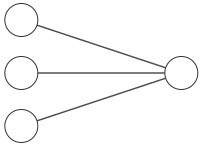
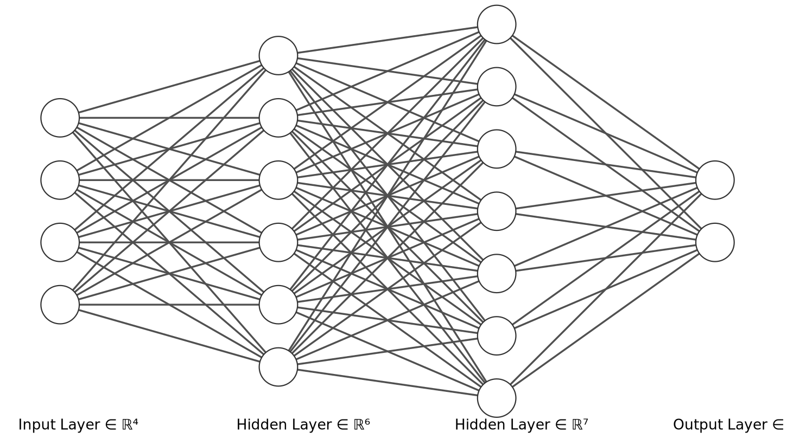
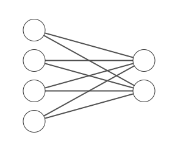

Components of an ANN:
Real Neurons
Real neurons in a human brain have many more ways of computing, calling this neurons is a stretch of imagination. Marketing.
| \[ x = \left( \begin{align} x_{1} \\ x_{2} \\ x_{3} \end{align} \right) \] |  | \[\begin{align} z &= w'x + b \\ y &= \phi(z) \end{align} \] |
Note
\(w\) is a vector or weights, \(b\) is an intercept or bias term. \(\phi\) is (in general) a nonlinear function. This example has a 3-dim input and a 1-dim output, and a single layer (i.e. just the output layer).
\[\begin{align} z &= w'x + b \\ y &= \phi(z) \end{align} \]
Single input layer, multiple hidden layers, single output layer
\[\begin{align} h_1^{(1)} &= \phi(w_{11}^{(1)} x_1 + w_{12}^{(1)} x_2 + b_1^{(1)}) \\ h_2^{(1)} &= \phi(w_{21}^{(1)} x_1 + w_{22}^{(1)} x_2 + b_2^{(1)})\\ h^{(2)} &= \phi(w_1^{(2)} h_1^{(1)} + w_2^{(2)} h_2^{(1)} + b^{(2)}) \\ y &= \phi(w^{(3)} h^{(2)} + b^{(3)}) \end{align}\]
| \[ x = \left( \begin{align} x_{1} \\ x_{2} \\ x_{3} \\ x_{4} \end{align} \right) \] |
 |
\[\left( \begin{align} \hat{a}_{1} \\ \hat{a}_{2} \end{align} \right) = \hat{a}\] |
| (0,1,1,0) | ||
| (1,0,0,1) |
Each output \(Y\) is represented by a one-hot encoding with a 2-dimensional vector \((\hat{a}_{1}, \hat{a}_{2})\).
| (1,0) | ||
| (0,1) |
with linear activation, so we can solve for the weights easily